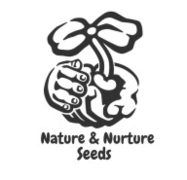
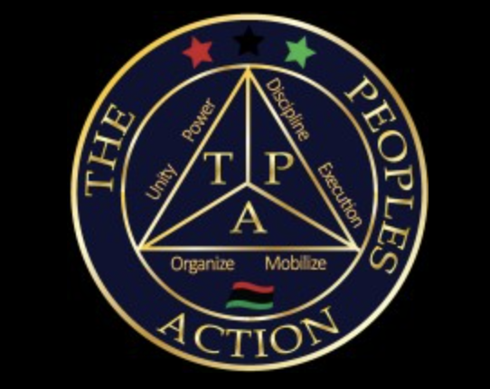
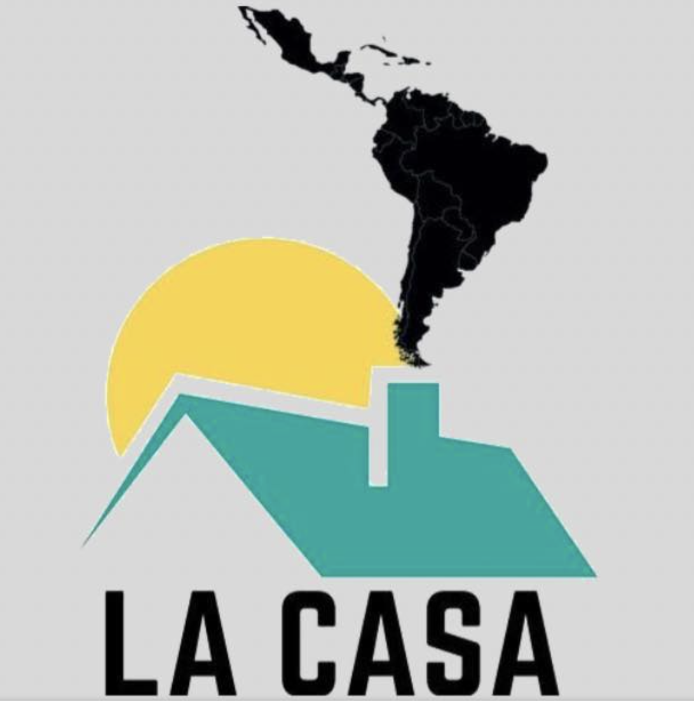
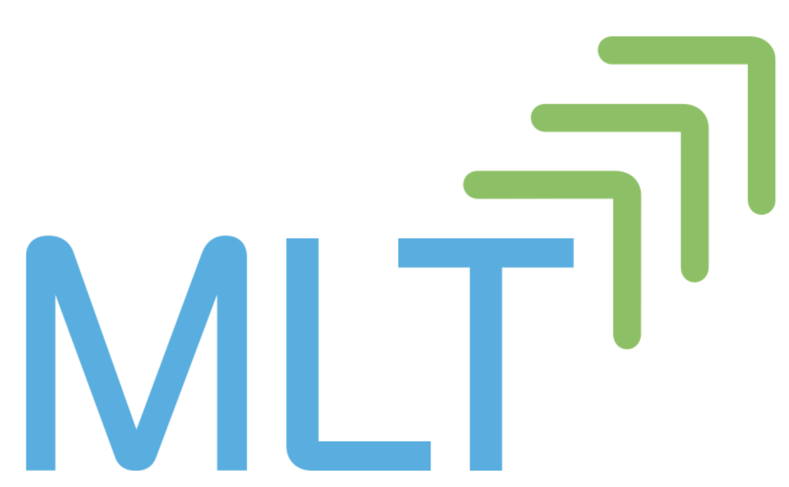
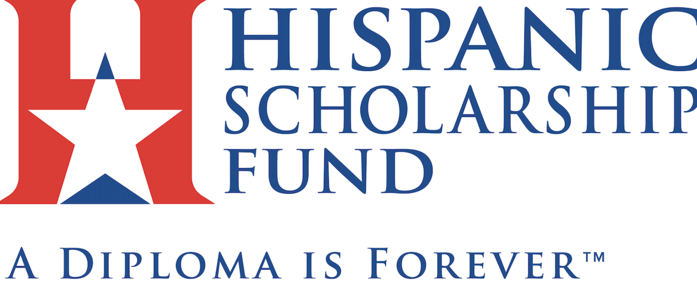
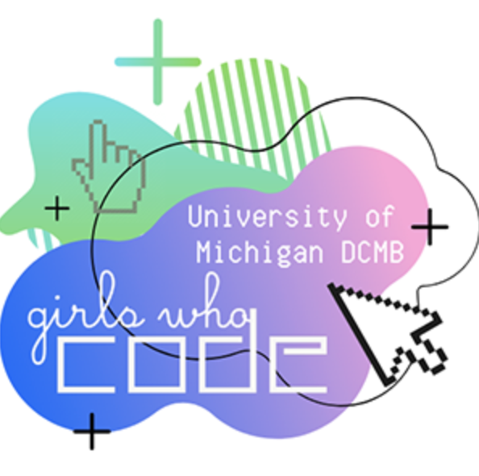

Incoming Intern @Meta!
I feel so blessed to share that I will be a Product Design Intern at Meta throught the Meta University Program in Menlo Park, CA for the summer 2023!

Organic Farm Seed Intern at Nature and Nurture
My role as an Organic Farm Seed Intern included working and managing 130 acres of woods, wetlands, and mostly clay-loam fields, focusing on weekly hands-on application of sustainable agriculture. I was the Harvest Festival 2022 Creative Director and organized creative efforts such as sign-making, directing small businesses, and social media efforts.
Social Media Intern at The People's Action
I was the primary Juneteenth Campaign chief and Social Media Creator. My roles and responsibilities included Attendance at Adopt the Block Initiatives in Detroit, Michigan, and tracking and monitoring social media accounts. I traveled weekly, photographed, documented, and volunteered while picking up trash in underserved family neighborhoods.
Latinx Student Leadership Summit (LSLS) Attendee
Selected as one of 130 Latinx student leaders from a pool of 870+ applicants nationwide to attend the leadership summit. The Latinx Student Leadership Summit is a selective program
La Casa
La Casa seeks to create a space for the Latinx student body to come together, voice their issues, and form a community. La Casa will organize its members to execute programs and events that will work to better serve the Latinx community on campus and at large as well. All in all, La Casa intends to be an inclusive and welcoming environment for all those who value the Latinx community, culture, and identity.
Management Leadership for Tomorrow Fellow
Selected 1 of 1000 high achieving applicants to participate in this Career Preparation program focused on professional and leadership development
ColorStack
ColorStack is a non-profit that works to increase the number of Black and Latinx Computer Science graduates that go on to launch rewarding technical careers.
Hispanic Scholarship Fund Scholar
HSF empowers students and parents with the knowledge and resources to successfully complete a higher education, while providing scholarships and support services to as many exceptional students, Scholars, and Alumni as possible.
Girl's Who Code @DCMB
Girls Who Code is a nonprofit organization which aims to support and increase the number of women in computer science by equipping young women with the necessary computing skills to pursue 21st century opportunities.
